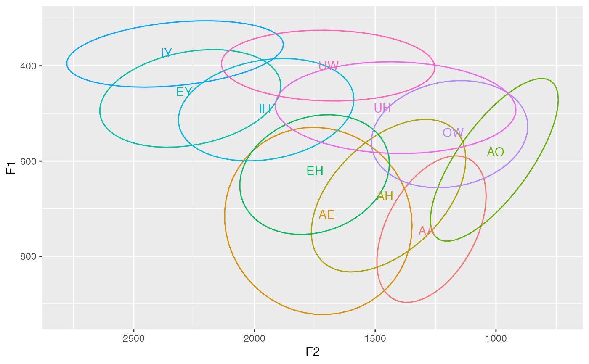
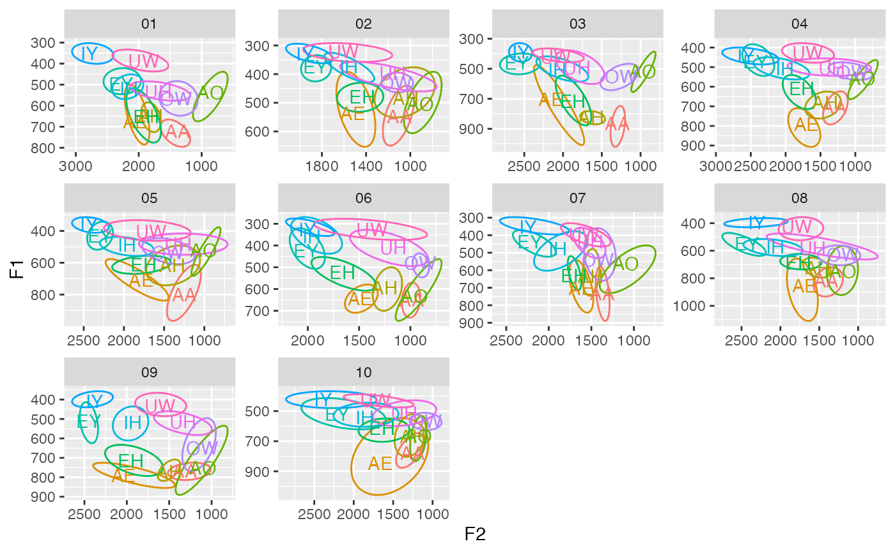
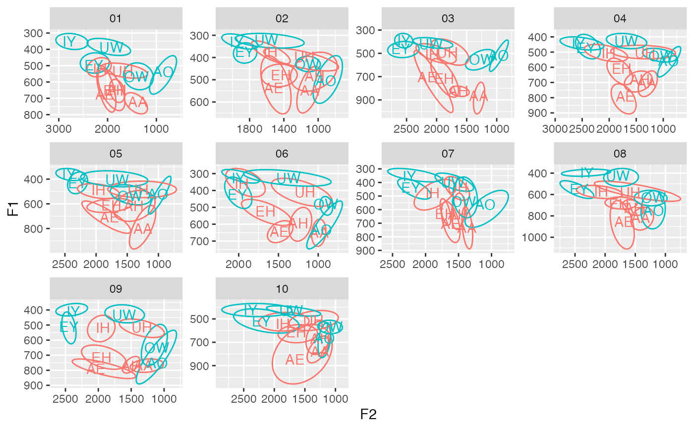

Runs a summarizing function for each specified column, for each specified group. This is intended to be used to plot centroids in ellipses in ggplot2 without having to create a new object or have a lot of in-line code. See examples below.
get_centroids(df, .cols, ..., .fns = median)a dataframe.
columns that should be summarized. For sociophonetic data, this
is usually the names of your vowel columns, e.g. c(F1, F2). This literally
is just passed into an `across` function within `summarize`.
grouping variables. For sociophonetic data, this might be speaker and allophone or something. This is just passed into `group_by`.
one or more names of functions. By default, median. This is
passed into `across`.
an ungrouped dataframe
Okay technically this function name is a misnomer because we're not truly getting centroids in a mathematical sense. But that's what I think of when I run this so that's what we're going with.
library(tidyverse)
df <- joeysvowels::idahoans
# Basic usage as a summarizing function
df %>%
get_centroids(c(F1, F2), vowel)
#> # A tibble: 11 × 3
#> vowel F1 F2
#> <chr> <dbl> <dbl>
#> 1 AA 746. 1288.
#> 2 AE 712. 1701.
#> 3 AH 673. 1460.
#> 4 AO 580. 1001.
#> 5 EH 621. 1750.
#> 6 EY 454. 2292.
#> 7 IH 489. 1957.
#> 8 IY 372. 2364.
#> 9 OW 540. 1176.
#> 10 UH 488. 1470.
#> 11 UW 399. 1693.
# Within a ggplot2 block. Note that you do have to start the data argument with the dot and pipe it into get_centroids, rather than incorporating it in (i.e. get_centroids(., vowel)). Not sure why but this appears to be a contraint imposed by ggplot2.
ggplot(df, aes(F2, F1, color = vowel)) +
stat_ellipse(level = 0.67) +
geom_text(data = . %>% get_centroids(c(F1, F2), vowel), aes(label = vowel)) +
scale_x_reverse() +
scale_y_reverse() +
theme(legend.position = "none")

# You can add multiple groups to the code too.
ggplot(df, aes(F2, F1, color = vowel)) +
stat_ellipse(level = 0.67) +
geom_text(data = . %>% get_centroids(c(F1, F2), speaker, vowel), aes(label = vowel)) +
scale_x_reverse() +
scale_y_reverse() +
facet_wrap(~speaker, scales = "free") +
theme(legend.position = "none")

# Like any use of group_by(), additional, perhaps redundant columns may be specified for the purpose of "passing them through." In this example, adding tense_lax doesn't change the calculations, but it's useful for this plot. Additionally, this block of code highlights one strength of get_centroids, and that is that I can pass in a modified dataframe directly to ggplot and then modify it even further to get the labels, without needing to create any new objects.
df %>%
mutate(tense_lax = fct_collapse(vowel,
"tense" = c("IY", "EY", "AO", "OW", "UW"),
"lax" = c("IH", "EH", "AE", "AA", "AH", "UH"))) %>%
ggplot(aes(F2, F1, color = tense_lax, group = vowel)) +
stat_ellipse(level = 0.67) +
geom_text(data = . %>% get_centroids(c(F1, F2), speaker, tense_lax, vowel),
aes(label = vowel)) +
scale_x_reverse() +
scale_y_reverse() +
facet_wrap(~speaker, scales = "free") +
theme(legend.position = "none")

# For column selection, any tidyselect output works, such as matches().
df %>%
get_centroids(matches("F\\d"), speaker, vowel)
#> # A tibble: 110 × 6
#> speaker vowel F1 F2 F3 F4
#> <fct> <chr> <dbl> <dbl> <dbl> <dbl>
#> 1 01 AA 722. 1381. 1974. 3197.
#> 2 01 AE 675. 2058. 2569. 3389.
#> 3 01 AH 650. 1814. 2389. 3639.
#> 4 01 AO 536. 857. 2329. 3606.
#> 5 01 EH 653. 1884. 2409. 3621.
#> 6 01 EY 498. 2281. 2905. 3735.
#> 7 01 IH 517. 2154. 2788. 3783.
#> 8 01 IY 352. 2784. 3015. 4152.
#> 9 01 OW 566. 1405. 2562. 3713.
#> 10 01 UH 533. 1690. 2524. 3745.
#> # ℹ 100 more rows
# For functions, you can add more than one. Just wrap them up into c().
df %>%
get_centroids(c(F1, F2), .fns = c(median, mean), speaker, vowel)
#> # A tibble: 110 × 6
#> speaker vowel F1_1 F1_2 F2_1 F2_2
#> <fct> <chr> <dbl> <dbl> <dbl> <dbl>
#> 1 01 AA 722. 731. 1381. 1405.
#> 2 01 AE 675. 644. 2058. 2033.
#> 3 01 AH 650. 654. 1814. 1805.
#> 4 01 AO 536. 582. 857. 922.
#> 5 01 EH 653. 635. 1884. 1937.
#> 6 01 EY 498. 483. 2281. 2265.
#> 7 01 IH 517. 513. 2154. 2147.
#> 8 01 IY 352. 350. 2784. 2713.
#> 9 01 OW 566. 564. 1405. 1353.
#> 10 01 UH 533. 530. 1690. 1615.
#> # ℹ 100 more rows
# However, unless they are named, they won't be useful.
df %>%
get_centroids(c(F1, F2), .fns = c(`med` = median, `average` = mean), speaker, vowel)
#> # A tibble: 110 × 6
#> speaker vowel F1_med F1_average F2_med F2_average
#> <fct> <chr> <dbl> <dbl> <dbl> <dbl>
#> 1 01 AA 722. 731. 1381. 1405.
#> 2 01 AE 675. 644. 2058. 2033.
#> 3 01 AH 650. 654. 1814. 1805.
#> 4 01 AO 536. 582. 857. 922.
#> 5 01 EH 653. 635. 1884. 1937.
#> 6 01 EY 498. 483. 2281. 2265.
#> 7 01 IH 517. 513. 2154. 2147.
#> 8 01 IY 352. 350. 2784. 2713.
#> 9 01 OW 566. 564. 1405. 1353.
#> 10 01 UH 533. 530. 1690. 1615.
#> # ℹ 100 more rows